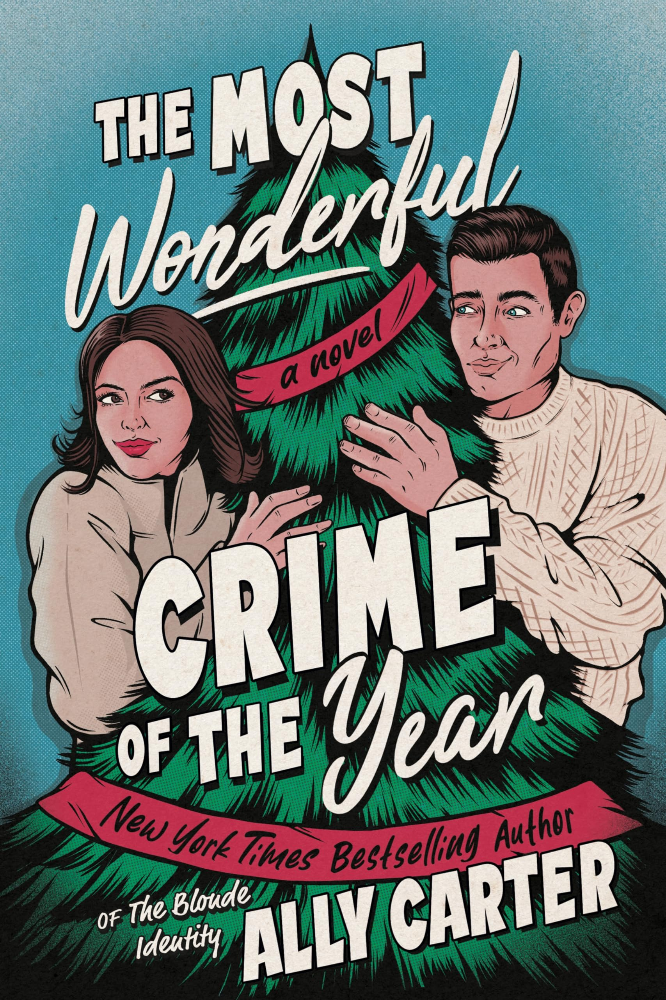
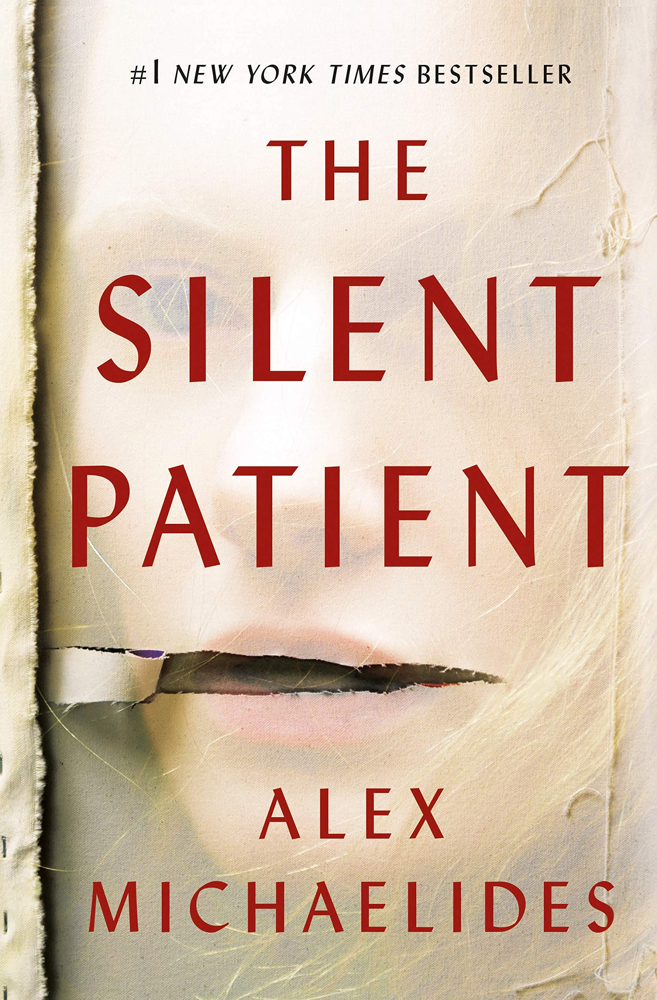
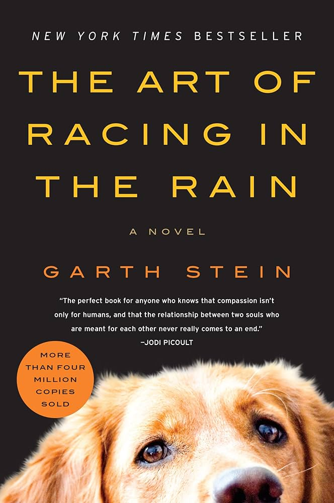

The Housemaid

The Most Wonderful Crime of the Year

The Silent Patient

Emotional Adventurer: My bookshelf is filled with transformative adventures, finding love, resilience, and redemption. Every transformation I discover in a book expands my own possibilities! My most read genres are:

| Title | Author | My Review | Link to Book on Fable |
|---|---|---|---|
| Fourth Wing | Rebecca Yarros | This book became my all-time favorite. I'm absolutely obsessed with the world of Basgiath, and I just know Xaden will surprise me. Amazing start to a saga! | Check it out |
| Verity | Colleen Hoover | The plot twist?! Not gonna lie, it was hard getting through the descriptive child abuse scenes, but the last 5 chapter were a roller coaster! I couldn't put this book down. | Check it out |
| Just for the Summer | Abby Jimenez | Jimenez is a master in beautifully writing about tough real-life situations. I love how all her books develop within the same universe but in different temporalities. 100/10! | Check it out |
Good things happen at the lake. That’s what Alice’s grandmother says, and it’s true. Alice spent just one summer at a cottage with Nan when she was seventeen—it’s where she took that photo, the one of three grinning teenagers in a yellow speedboat, the image that changed her life. Now Alice lives behind a lens. As a photographer, she’s most comfortable on the sidelines, letting other people shine. Lately though, she’s been itching for something more, and when Nan falls and breaks her hip, Alice comes up with a plan for them both: another summer in that magical place, Barry’s Bay. But as soon as they settle in, their peace is disrupted by the roar of a familiar yellow boat, and the man driving it. Charlie Florek was nineteen when Alice took his photo from afar. Now he’s all grown up—a shameless flirt, who manages to make Nan laugh and Alice long to be seventeen again, when life was simpler, when taking pictures was just for fun. Sun-slanted days and warm nights out on the lake with Charlie are a balm for Alice’s soul, but when she looks up and sees his piercing green gaze directly on her, she begins to worry for her heart. Because Alice sees people—that’s why she is so good at what she does—but she’s never met someone who looks and sees her right back.
Women can be heroes. When twenty-year-old nursing student Frances "Frankie" McGrath hears these words, it is a revelation. Raised in the sun-drenched, idyllic world of Southern California and sheltered by her conservative parents, she has always prided herself on doing the right thing. But in 1965, the world is changing, and she suddenly dares to imagine a different future for herself. When her brother ships out to serve in Vietnam, she joins the Army Nurse Corps and follows his path. As green and inexperienced as the men sent to Vietnam to fight, Frankie is over-whelmed by the chaos and destruction of war. Each day is a gamble of life and death, hope and betrayal; friendships run deep and can be shattered in an instant. In war, she meets—and becomes one of—the lucky, the brave, the broken, and the lost. But war is just the beginning for Frankie and her veteran friends. The real battle lies in coming home to a changed and divided America, to angry protesters, and to a country that wants to forget Vietnam. The Women is the story of one woman gone to war, but it shines a light on all women who put themselves in harm's way and whose sacrifice and commitment to their country has too often been forgotten. A novel about deep friendships and bold patriotism, The Women is a richly drawn story with a memorable heroine whose idealism and courage under fire will come to define an era.
Kelly Bishop’s storied career has been defined by landmark achievements, from winning a Tony Award for her turn in the original Broadway cast of A Chorus Line to her memorable performance as Jennifer Grey’s mother in Dirty Dancing, but it is probably her role as matriarch Emily in the modern classic Gilmore Girls that cemented her legacy. Now, Bishop reflects on her remarkable life and looks towards the future, sharing some of her greatest stories and the life lessons she’s learned on her journey. From her early transition from dance to drama, to marrying young to a compulsive gambler, to the losses and achievements she experienced—among them marching for women’s rights and losing her second husband to cancer—Bishop offers a rich, genuine celebration of her life. Full of witty insights, The Third Gilmore Girl is a warm, unapologetic, and powerful memoir from a woman who has left indelible impressions on her audiences for decades.